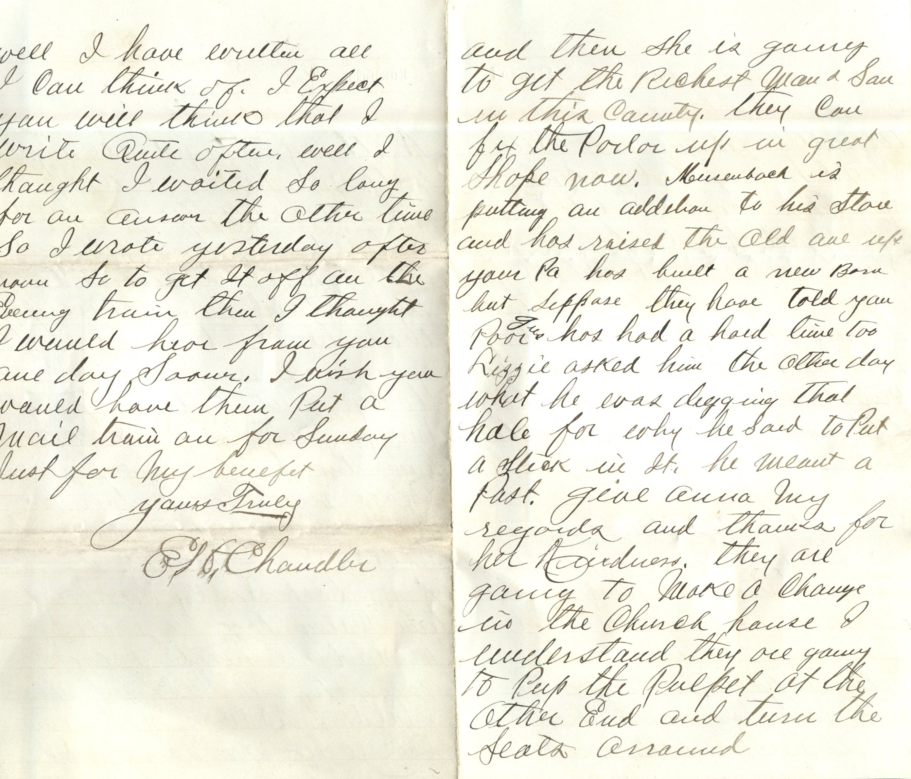
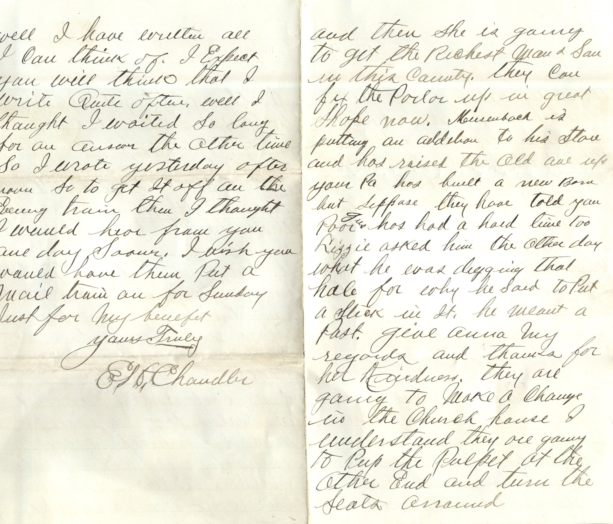

From: Elijah H. Chandler, To: Jeanette Knox Chandler

 
From: Elijah H. Chandler, To: Jeanette Knox Chandler Mailed From: Pearl, Illinois on October 21, 1886
Pearl Oct. 21 '86 Dear Nettie, As I did not have time to write yesterday I will try and write to you today. I don't hardly know what I did write now I was bothered every few minutes. The boys are pretty lively but not very many drunk. Nettie I think you do awful well writing such nice long letters if you knew how I longed and waited for them you would not say it was no use for you to try to write as long letters I send you. Let them be long or short I find the most of my pleasure reading them. Even you was here now to tell me what you will same day. Yes Nettie I remember the night we was at the bridge and what we was talking about. I have thought about it lots of times and what I told you. I never told you all I intended to because you did not understand me right when I commenced tell you. I will tell you though the first time we have the pleasure of meeting would write it to you but don't think I could explain it so you could remember all that passed. I am referring to the night we was talking about Miss B. or rather making that our conversation. However I am well pleased the way every thing has turned out and hope I will never have any more such times. I think that will teach me a lesson. I would like to know what all Miss L. has told you. I think she is pretty good at telling anyway. Nettie there is nothing that I wont tell you now if you should ask. Or even try to keep anything secret from you in the future. I know now that you will be true to me. I knew the day we were over to the spring where we had the picnic that there was going to be a change but then I did not dream of it turning out like it has in first place. I knew Miss B. would be mad if she found it out and I was sure she would do that. I don't know that it makes it any lonesome for me since Stewart left or not he had not been in the habit of coming about me very much for some time. He never seemed like the same man to me after I joined the church. There has been several patrons went west since you left home but they were from out of the country so don't think you know them. I sold three tickets today to Florence, Kans. and one to Republican City, Neb. Did you know David Hollis of Nebo he dropped dead the other morning appearing well. Yes Maggie is lots of company. The night Bro Anthony stayed all night with me he asked where you was after we had retired. He had missed you he said several days ago I told him where you was he said he thought you was an awful nice lady and said he thought Maggie was a perfect angel. How does Billy like his place now? What does Mr. Kidd fallow I bet Bess feels big sure enough with his new suit. Last Sunday Eve I and Tan Calvin took a walk. He said he heard I was going to get married. Yes I told him I was same time this week. He asked who to, Nettie, Emma, or Hattie. I told him I didn't know yet, then he wanted to know if I had heard from you since you left. I told him yet I heard your folks talking about you. He sure changed the subject when he seen he could not gain anything. I thought he as most to suggestive and didn't give him any satisfaction. I wouldn't think that Forger Hall's could agree very well, some of them members of the Church and some Saloon keepers would you. Yes suppose L. will style up now in great shape while her Pa has a good job and then she is going to get the richest man in this country. They can fix the parlor up in good shape now. Mousenbach is putting an addition to his store and has raised the old one up. Your Pa has built a new barn but suppose they have told you poor Gus has had a hard time too. Lizzie asked him the other day what he was digging that hale for why he said to put a stake in it. He meant a post. Give Anna my regards and thanks for her kindness. They are going to make a change in the church house. I understand they are going to keep the pulpit at the other end and turn the seats around. Well I have written all I can think of. I expect you will think that I write quite often. Well I thought I waited so long for an answer the other time so I wrote yesterday after now. Must get it off on the evening train then I thought I would hear from you one day soon. I wish you would have them put a mail train on for Sunday just for my benefit. Yours Truly, E.H. Chandler